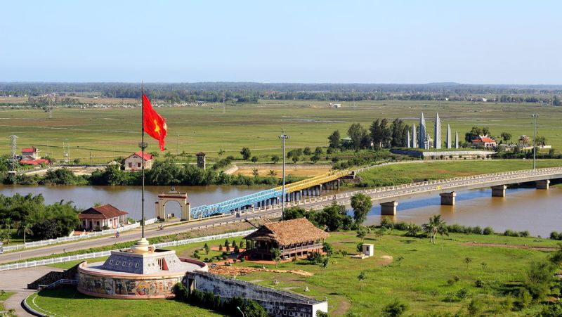

Những địa điểm không thể bỏ qua khi đến với nơi đây !
1. Thành cổ Quảng Trị
Thanh cổ Quảng Trị địa danh gần 50 năm về trước đã thức tỉnh lương tri loài người trên thế giới bởi cuộc đọ sức quyết liệt của quân giải phóng trong cuộc chiến 81 ngày đêm, mùa hè lịch sử năm 1972 chống lại cuộc phản kích tái chiếm của quân đội Sài Gòn. Sự kiện lịch sử đó đã viết lên một khúc tráng ca về chủ nghĩa anh hùng cách mạng đánh dấu một bước ngoặt trong lịch sử đấu tranh giải phóng dân tộc và trở thành một di sản văn hóa tiêu biểu của đất nước. Thành cổ Quảng Trị không chỉ là tâm điệp về sự tàn khốc ác liệt của bom đạn, mà còn là sự tàn khốc ác liệt của từng số phận con người trong cuộc chiến.

Cuộc chiến này diễn ra, trong thời điểm trong thời điểm hết sức nhạy cảm có sức quyết định khi mà thần bài trên chiến trường đều tác động đến vị thế của mỗi bên trên bàn đàm phán của hội nghị Pari về chấm dứt chiến tranh và lặp lại hòa bình ở Việt Nam. Vì vậy, để giữ vững thành cổ và thị xã Quảng Trị hàng ngàn chiến sĩ Giải phóng quân trên khắp cả nước và đồng bào cả nước đã chiến đấu anh dũng và vĩnh viễn nằm lại trên mảnh đất này. Các anh hi sinh nhưng có những anh hình hài không còn nguyên vẹn nữa, máu và xương thịt của các anh đã hòa vào lòng đất để mỗi tấc đất, cành cây, ngọn cỏ mỗi bước chân của chúng ta vào thành cổ hôm nay thấm máu của biết bao liệt sĩ. Sự hi sinh và cống hiến của những người con với lý tưởng cách mạng dã dựng lên một tượng đài về khát vọng độc lập và để lại cho thế hệ sau một triết lí sống cao đẹp, sự hiến dâng hơi thở cuối cùng vì sự vinh danh của tổ quốc. Với những ý nghĩa và giá trị lịch sử đó, thành cổ Quảng Trị đã được Đảng và nhà nước quan tâm đầu tư trùng tu, tôn tạo trở thành một khu tưởng niệm để tri ân các anh hùng liệt sĩ, xây dựng thêm bảo tàng để lưu giữa những hiện vật, những bức ảnh của cuộc chiến này. Nếu đã chọn du lịch Quảng Trị thì thành cổ là điểm bạn nhất định phải tới, thắp một nén nhang cho người nằm dưới cỏ xanh non tơ. Cách đó chừng 1 Km (từ cửa chính của thành) là dòng sông Thạch Hãn.
“Đò lên Thạch Hãn ơi… chèo nhẹ
Đáy sông còn đó bạn tôi nằm
Có tuổi hai mươi thành sóng nước
Vỗ yên bờ, mãi mãi ngàn năm”
(Lời người bên sông – Lê Bá Dương)
Thành cổ Quảng Trị, sông Thạch Hãn đã đi vào thơ ca như những trang sử bi tráng thấm đượm máu và hoa. Đến
đây vào dịp giải phóng miền Nam 30/04, Quốc khánh 02/09, đặc biệt là dịp 27/07 – ngày thương binh, liệt sĩ
bạn sẽ được cùng bà con thị xã Quảng Trị thả hoa đăng xuống dưới dòng sông Thạch Hãn. Nhưng khác với cảm
giác thơ mộng ở Hội An, hoa đăng ở Thạch Hãn nó lạ lắm. Hãy đến đây để có cảm nhận bạn nhé!
2. Thánh địa La Vang
Thánh địa La Vang nằm ở huyện Hải Lăng, Quảng Trị thuộc Tổng Giáo phận Huế. Nơi đây đã phải trải qua rất nhiều biến cố của lịch sử, thời gian. Theo truyền thuyết và sự tích kể lại, thì đây là nơi Đức mẹ hiện ra để chỉ dẫn, an ủi các giáo dân chạy nạn trước sự truy lùng của quân Tây Sơn thời vua Cảnh Thịnh với chiếu chỉ cấm đạo.
\
Kiến trúc của nhà thờ ở đây tuân thủ theo lối kiến trúc truyền thống của các công trình xây dựng nhà thờ
Công giáo. Ở trung tâm của trung tâm hành hương, ngày nay còn lại di tích tháp chuông của Vương cung thánh
đường Đức Mẹ La Vang. Công trình này được xây dựng từ năm 1924 – 1929, đại trùng tu năm 1959.
Vào mùa hè năm 1972, Vương Cung Thánh Đường đã bị hủy hoại do chiến tranh. Hiện nay, Trung tâm hành hương
Đức mẹ La Vang đã có những lần trùng tu và bổ sung thêm nhiều công trình. Nếu đã chọn du lịch Quảng Trị, hãy
ghé thăm Trung tâm hành hương Đức mẹ La Vang, tìm hiểu về sự giao thoa văn hóa, tín ngưỡng Á – Âu tại đây.
3. Cầu Hiền Lương - Sông Bến Hải
Trong lịch sử giữ nước của nhân dân ta, có những con sông, mỏm núi, ngôi làng, con dốc, cây cầu,… đã trở thành huyền thoại, hóa thân thành chứng tích lịch sử quan trọng, gắn bó sống đọng trong tâm thức người Việt trong đó, có cây cầu lịch sử- cầu Hiền Lương. Và con sông một hình ảnh đẹp về quê hương, về sự bình yên. Thế nhưng lại có một con sông phải mang trong mình nỗi uất hận, oằn mình chịu cảnh chia cắt quê hương chia cắt đất nước, một con sông bị xẻ làm đôi 2 bờ giới tuyến đó là sông Bến Hải.
\ Cầu Hiên Lương là cây cầu nối liền quốc lộ AH1(tuyến đường xuyên Á), bắc qua sông Bến Hải thuộc thôn Hiền Lương, xã Vĩnh Thành, huyện Vĩnh Linh, tỉnh Quảng Trị. Tại nơi này đã từng phải chịu nỗi chia cắt hai miền Nam Bắc Việt Nam hơn 20 năm ròng rã trong cuộc kháng chiến chống Mỹ cứu nước.
4. Biển Cửa Tùng
Bãi biển Cửa Tùng nằm ở huyện Vĩnh Linh, Quảng Trị có bờ cát mịn, trắng phau, thoai thoải giữa làn nước mát xanh trong. Vào mùa hè, khi những cơn gió Lào mang hơi nóng hầm hập, khô rang thổi qua vùng đất nắng gió miền Trung, thì ở Cửa Tùng càng trở nên hấp dẫn với du khách.

Trông con mắt của người nước ngoài, Cửa Tùng là “Nữ hoàng của các bãi biển”. Lareine des plages – Chính quyền người Pháp đã phát hiện ra vẻ đẹp kỳ thú nên thơ của Cửa Tùng. Vua Bảo Đại khi đến Cửa Tùng đã cho làm bãi tắm riêng và được mệnh danh là “Nữ hoàng” của các bãi tắm. Du lich Quảng Trị đang rất trú trọng kêu gọi đầu tư, dự kiên trong tương lai, Của Tùng sẽ có một khu Rerost đẹp, sang trong và hấp dẫn khách du lịch.
5 . Địa đạo VĨnh Mốc
Địa đạo Vịnh Mốc cùng nằm ở huyện Vĩnh Linh, khá gần Cửa Tùng. Đây là công trình kiến trúc quân sự kỳ vĩ dưới lòng đất, ra đời trong thời kỳ kháng chiến chống Mỹ cứu nước. Với khẩu hiệu “quân sự hóa toàn dân, công sự hóa toàn khu vực” quân dân Vĩnh Linh đã tiến hành đào hầm hào, với nhiều công năng: trụ sở, kho hậu cần, trường học, bệnh viện, khu vực sinh hoạt của từng gia đình…, được bố trí khắp các điểm dân cư, dọc đường đi, ven ruộng, bờ biển, được nối thông nhau bằng hệ thống giao thông hào chằng chịt thay cho đường trên mặt đất.

Tính từ cuối năm 1965 đến năm 1968, toàn huyện Vĩnh Linh có khoảng 114 địa đạo với tổng chiều dài hơn 40km, hệ thống giao thông hào hơn 2.000km và hàng trăm tiểu đạo khác, trở thành những “làng hầm” – lần đầu tiên xuất hiện trong lịch sử chiến tranh Việt Nam, thể hiện ý chí với phương châm: “Một tấc không đi, một li không rời. Mỗi làng, xã là một pháo đài”, bám trụ chiến đấu bảo vệ quê hương và giữ thông mạch máu ra tiền tuyến.
6 . Nghĩa trang liệt sĩ Trường Sơn
Chiến tranh đi vào ký ức, nhưng những vết thương vẫn luôn in hằn vết sẹo mãi không thể nào quên. Nghĩa trang
Trường Sơn như một minh chứng cho tội ác của kẻ thù và cũng là sự bi tráng của những người con đất Việt hy
sinh tính mạng và tuổi xuân, đặt vận mệnh của đất nước lên trên tất cả để giành lại độc lập tự do cho dân
tộc.
Nghĩa trang liệt sĩ Trường Sơn là nơi quy tập 10.263 mộ chí liệt sĩ của Quân Giải phóng miền Nam Việt
Nam và Quân đội Nhân dân Việt Nam, trên tuyến đường Trường Sơn – còn đường gọi là đường mòn Hồ Chí Minh.
Nghĩa trang được xây dựng tại khu vực Bến Tắt, cạnh đường quốc lộ 15, thuộc địa phận xã Vĩnh Trường, huyện
Gio Linh, tỉnh Quảng Trị, cách thành phố Đông Hà, tỉnh lỵ của tỉnh Quảng Trị khoảng 38 km về phía tây bắc,
cách quốc lộ 1A (đoạn thị trấn huyện lỵ Gio Linh) chừng hơn 20km về phía tây bắc.

Tổng diện tích nghĩa trang Liệt sĩ Quốc gia Trường Sơn là 39,8 ha; với 5 khu được tọa lạc trên những vạt đồi
bạt ngàn, cạnh thượng nguồn sông Bến Hải. Đây là nơi quy tập 10.263 hài cốt các liệt sĩ đã chiến đấu và hy
sinh trên tuyến đường Trường Sơn huyền thoại. Tháng 10/1975 nghĩa trang bắt đầu được xây dựng và hoàn thành
vào 2 năm sau đó.
Từ cuối năm 1974, những ngôi mộ liệt sĩ đầu tiên đã được quy tập về đây. Trong cuộc kháng chiến chống Mỹ,
đã có hơn 20.000 người con ưu tú của đất nước đã ngã xuống trên tuyến đường Trường Sơn và hơn một nửa trong
số đó vẫn chưa tìm thấy hài cốt. Trong các cung đường du lịch Miền Trung rất nhiều những điểm thăm quan thú
vị, hấp dẫn, nhưng đi bạn cũng đừng quên thắp nén những cho người đã nằm xuống vì quê hương đất nước nhé!
Đây là điểm tham quan du lịch Quảng Trị mà bạn không nên bỏ qua.